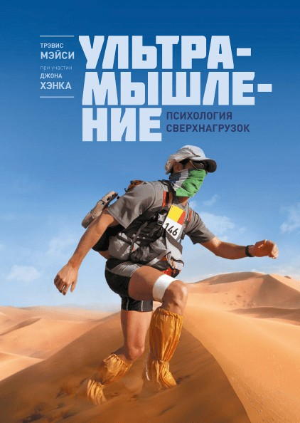

Домашняя работа


В этой книге много историй: о соревнованиях серии Leadville Race Series, о маунтинбайке в Китае, о забегах через штат Юта, о каякинге в Швеции – и о многом другом, потому что опыт показывает, что человек действительно может добиться любых поставленных перед собою целей. Главная задача этих историй – донести до вас те принципы и правила, которые актуальны для вас и ваших начинаний. Принципы, которые закалили автора, поддерживали и вели через все длинные и напряженные мили в очень отдаленных местах и в очень сложных обстоятельствах. Автор называет это ультрамышлением (Ultra Mindset); эти принципы – психологические установки на серьезные испытания, на сверхнагрузки. Применять установки мы учимся, конечно, на практике. Тревис предлагает практиковать свои установки, думая и разговаривая с собой в ключе ультрамышления.

Трудности – неотъемлемая часть нашей жизни. Если рассматривать их как положительные и даже необходимые средства психологической подготовки, можно постепенно, камень за камнем, выстроить бастион внутренней прочности, которая позволит дойти до победного конца во всем, на что вы по-настоящему настроитесь. В тяжелых ситуациях мы говорим себе "это хороший психологический тренинг", тогда трудности воспринимаются как ступень к цели.

"Установка на рост" VS "Установка на данность" "Поклонники" с фиксированным сознанием рассуждают так: все способности даны этим людям потому, что они особенные, а я "не на столько умен", "не так талантлив" и т.д. Они не учатся у людей, которыми восхищаются, но завидуют им, возмущаются, злятся и расстраиваются. "Подражатели" с гибким сознанием рассуждают так: наблюдая за успехами своих кумиров, я могу научиться необходимым действиям и повторить их. Зависть и возмущения при таком мышлении превращается в мотивацию. "Ты говоришь себе: я могу стать лучше, работать упорнее и эффективнее -и в результате становишься более похожим на того, кем восхищаешься."

Мотивация – это то, что заставляет людей оторвать зад от дивана. Мотивация стоит за любым сделанным делом. Есть 2 основные разновидности мотивации: Внутренняя - внутренний интерес или удовольствие, побуждающие к действиям. Внешняя мотивация проведет до финишной черты; но только внутренние награды остаются с нами на всю жизнь. Ваша задача - на каждом этапе движения к цели - находить нужную вам мотивацию.

Правильно использовать эго – это говорить себе: «Тщательное планирование, позитивный настрой и несгибаемая твердость позволят мне добиться чего угодно. Я могу проиграть, и придется начать с нуля. Может понадобиться время, все может пойти не по плану, но у меня все получится, потому что я верю в себя и в свои силы»*. Именно эго заставило Трэвиса продолжать двигаться в Explore Sweden. Только эго может поднять вас с дивана и заставить начать тренироваться/окончить обучение/ начать бизнес и т.д. Эго применительно к ультрамышлению – это глубокая вера в себя, основанная не столько на талантах и возможностях, сколько на трудолюбии и стойкости; и на вашей уверенности в том, что они помогут вам справиться с чем угодно. В книге «От хорошего к великому» говорится, что лучшие из лидеров – это те, кто предан своему делу, а не своему эго. Они принимают решения на основании того, что будет лучше для целей и задач компании, а не того, что потешит их самолюбие, и учитывают при этом реальные факты, не покупаясь на эмоции и не допуская бравады. Это «руководители пятого уровня». Чтоб стать таковым, нужно формировать четкое понимание своих возможностей и выстроить для себя план действий в определенной области на максимальную перспективу. Ключ к успеху – постоянное получение новых знаний и опыта при помощи других людей.

Два хода мысли о своих целях "ЗАЧЕМ" - когда нужен толчок к действию, нужно сохранить мотивацию или избежать соблазнов, когда решаете простые, монотонные, наскучивающие задачи. "ЧТО" когда сталкиваетесь с чем-то особенно сложным, интересным, незнакомым, требующим долгого изучения.

Смысл в том,что вы заранее берете некое обязательство и тем самым отказываетесь от дальнейшей возможности выбора по данному вопросу. Вы тренируетесь "заранее принимать твердое решение в отношении не очень комфортных вещей" и не отступать от него. Обратите внимание, как изменится ваше отношение к наступающему дню.

Часто в голове у нас звучат негативные истории, отражая наши подспудные тревоги и страхи. Но если записать на эту дорожку другие, новые истории, результатом могут стать ошеломительные перемены в вашем отношении к жизни, ваших возможностях и общем уровне счастья. Успешная карьера на 75% вашим уровнем оптимизма, социальной поддержкой и умением видеть в стрессовых ситуациях не угрозу, а возможноти. Негативные истории просто необходимо переписывать и преодолевать, создавая новые. Не нагружайте себя самокопанием и критикой,а наоборот, облегчайте себе жизнь увереностью и позитивом. Рекорды ставят для того чтоб их побили. Чем труднее приходится, тем сильнее ты становишся.

Если вы делаете то, что действительно важно для вас, то, что ведет к раскрытию вашей внутренней сущности и реализации самых высоких целей в жизни, никогда не сдавайтесь из страха перед тем, что будет, если вы продолжите. Страх непременно возникнет, но это одно из обязательных условий: продолжать, несмотря ни на что. Не сдавайтесь в ситуациях, когда вы боитесь чего-то желанного для вас. Если направление движения не слишком вас привлекает, но вы боитесь последствий смены этого направления, смело отступайте, бросайте его.